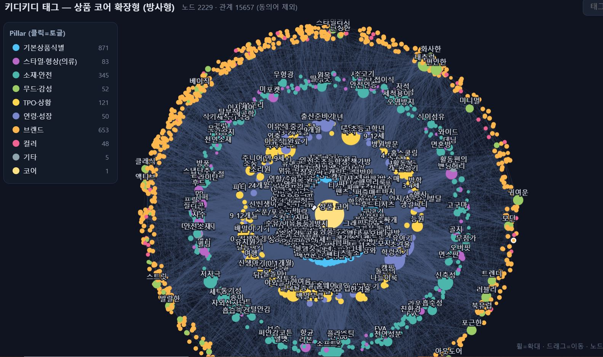

키디키디 내 AI 챗 검색을 구축하는 전체 프로젝트 중, 자연어 질의를 상품에 연결하는 메타태그 택소노미 · 자동 태깅 · 브랜드 컨셉 클러스터링을 설계한 데이터 인프라 파트
소속 이랜드 그룹 온라인 · 키디키디기간 2025역할 태그 택소노미 · 태깅 파이프라인 · 브랜드 클러스터링
# AI 챗 검색# 태그 택소노미 설계# 자동 태깅 파이프라인# BM25 + Dense 검색# 브랜드 클러스터링
전체 AI 챗 검색 파이프라인에서 본 케이스가 다루는 범위
자연어 질의
→
검색 의도 이해
→
상품 메타태그 인덱스본 케이스
→
랭킹
→
대화형 응답
★ 본 케이스는 AI가 자연어를 정확한 상품으로 연결하도록, 검색이 참조하는 상품 데이터 인프라(태그·태깅·브랜드)를 설계한 부분입니다.
01
Problem · 배경
도메인 특성
2535 쇼핑앱과 달리 아동복은 브랜드 간 겹치는 영역이 많고, 컬러·페르소나·코디 등 패션 심도가 얕음
데이터 제약
키디 실증 DB가 3~5만 개로 제한적이라, 룩북·코디 기반의 기존 태그 접근이 부적합
핵심 과제
AI가 자연어 질의를 정확한 상품으로 연결하려면, 제한된 DB에서도 태깅 정확도를 담보할 구조화된 메타태그 체계 + 브랜드 클러스터링이 선행되어야 함
02
Taxonomy · 태그 분류체계
새 모델에 얹힐 수 있도록 Pillar – Dimension – Tag – 유사어의 계층 구조로 단순화해 설계.
Pillar
11
최상위 축
예: TPO
Dimension
39
세부 차원
계절·활동 / 선물맥락 / 일상·기관 / 행사·기념일
Tag
2,811
키워드 태그
브랜드 607 제외 시 2,204
유사어
10,112
동의어 사전
클렌징 검토 대상
유사어가 많은 이유는 로컬 환경에서 국어사전 BM25 + 맥락·의미 연결(Dense) 방식으로 매칭하기 위해 사전을 미리 확장해 둔 구조이기 때문입니다. 향후 사용할 사전과 비교 검토해 Tag로 승격할지 / 미사용할지 결정하는 클렌징 이슈가 남아 있습니다.
03
Pipeline · 자동 태깅
1
입력 수집
대표이미지 1장 + 상품명·브랜드·가격 + 표준카테고리
2
자동 태깅
상품 정보를 AI로 분석해 폐쇄 어휘 태그를 자동 부여
3
검증·반영
폐쇄 어휘·취득 규칙 검증 통과분만 반영 — 상품당 15~40개
필수 태그
월령 · 연령 · 브랜드(1~3) · 카테고리(L1~L4) · 컨셉(최대 3)
추가 태그
필수 외 영역에서 10개 내외 — TPO · 사용주의사항 등

🗺
태그 온톨로지 지도
Pillar별 태그가 폐쇄 어휘로 묶인 구조 · img/ontology-map.jpg 넣으면 표시
상품 태그를 Pillar별로 묶은 온톨로지 지도 — 자연어 질의를 정확한 상품으로 잇는 뼈대 (노드 색 = Pillar)
04
Clustering · 브랜드 컨셉
제한적 DB에서 태깅 정확도를 높이는 열쇠로 브랜드 클러스터링을 최우선 과제로 설정
3개년(2023.01~현재) 표준상품군 데이터 기반, 의류·신발/잡화에 1건이라도 등록된 404개 브랜드를 13개 컨셉 × 남아/여아로 정리
용품까지 포함한 647개 브랜드는 브랜드 태그로 추가 (컨셉 정리는 404개, 용품 제외)
정리된 컨셉·브랜드는 모두 TAG_TAXONOMY에 통합해 자동 태깅에 활용
05
Results · 구축 규모
11 · 39
Pillar · Dimension계층 축 설계
2,811
Tag브랜드 제외 2,204
10,112
유사어 사전BM25+Dense 매칭
404 · 647
브랜드 컨셉 · 태그13개 컨셉 × 남녀
AI 챗 검색을 떠받치는 데이터 인프라
흩어져 있던 정성적 상품 데이터를 Pillar–Dimension–Tag 계층의 메타태그 체계로 구조화하고, 자동 태깅과 브랜드 컨셉 클러스터링으로 대량 상품에 일관 적용했습니다. 이렇게 정돈된 메타태그가 AI 챗 검색의 답변 정확도를 끌어올리는 토대가 됐고, 설계를 개발팀과 함께 파이프라인으로 구현했습니다.